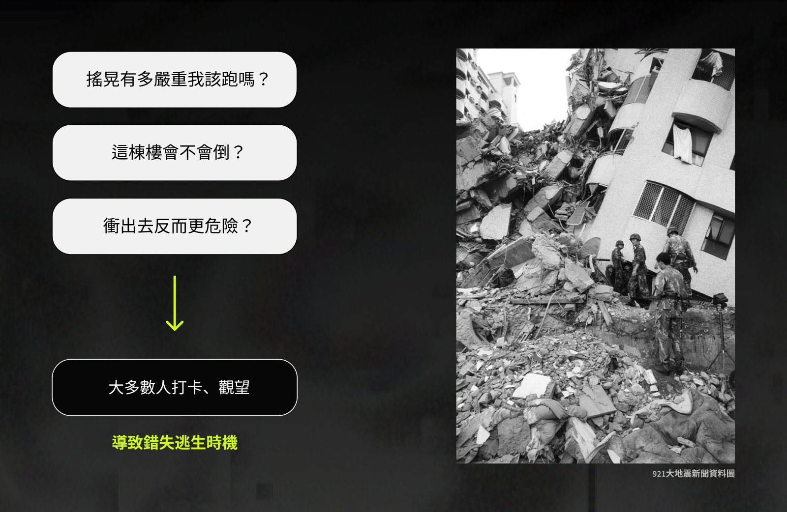
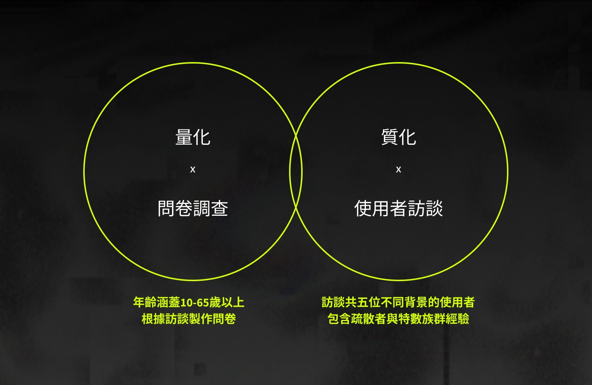
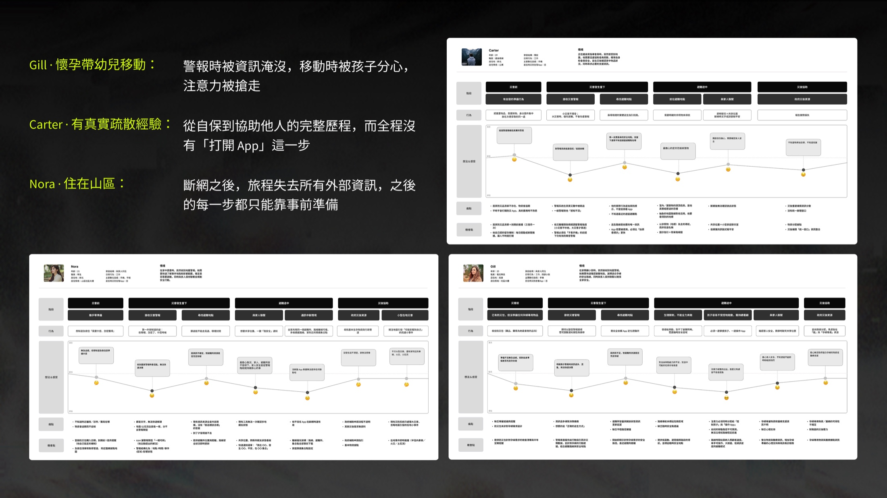
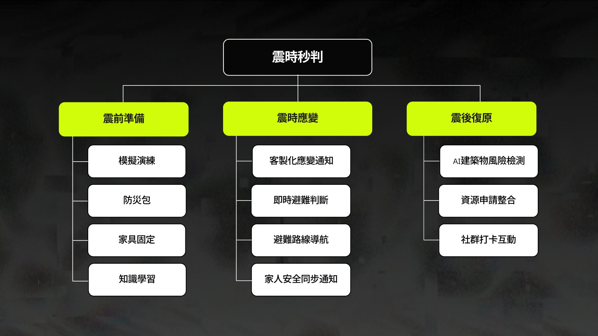
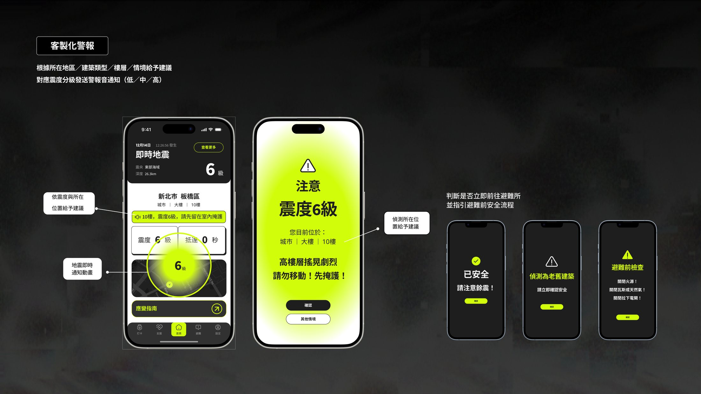
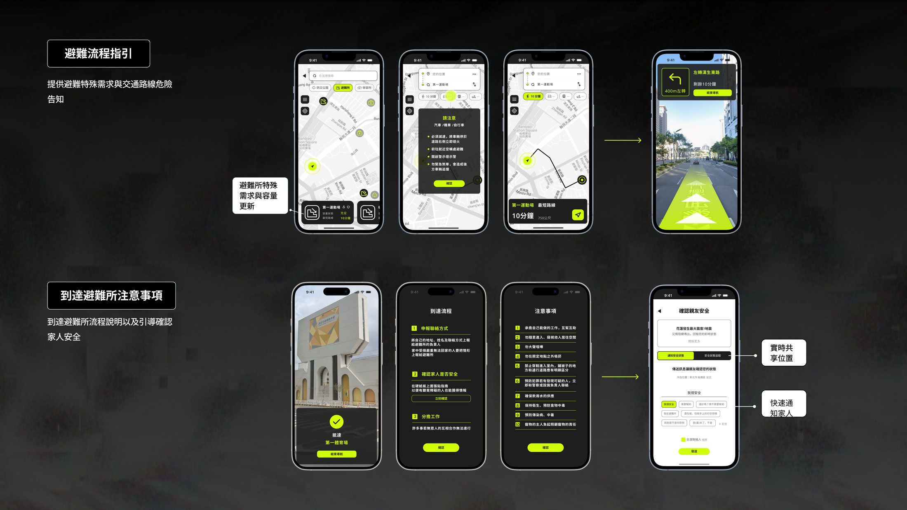
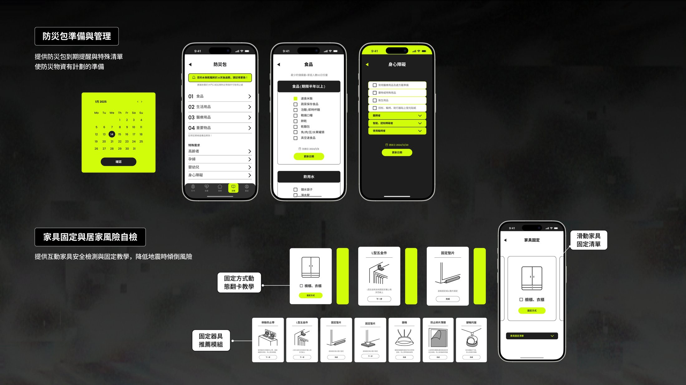
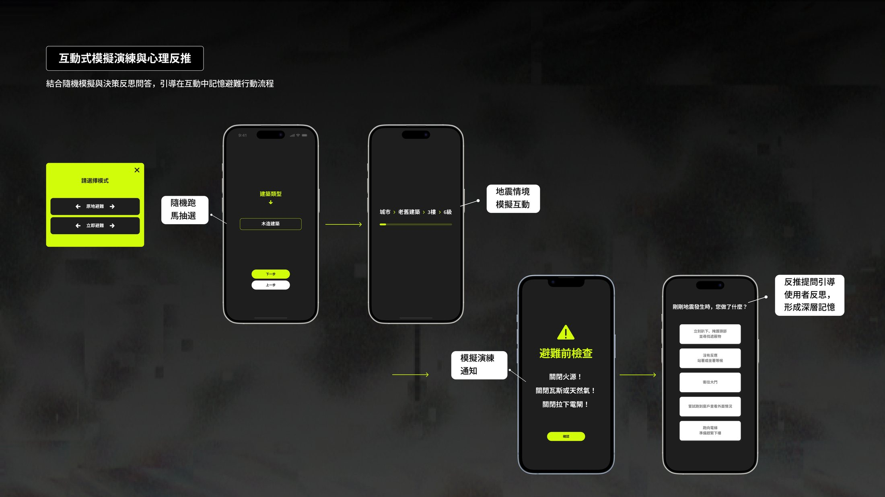
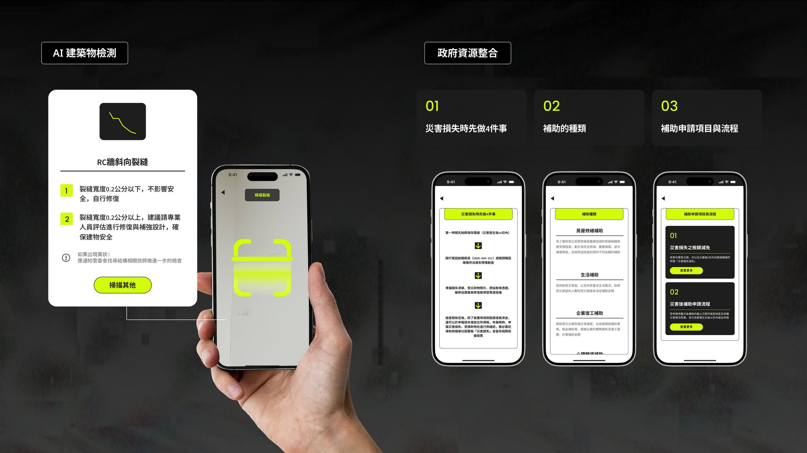
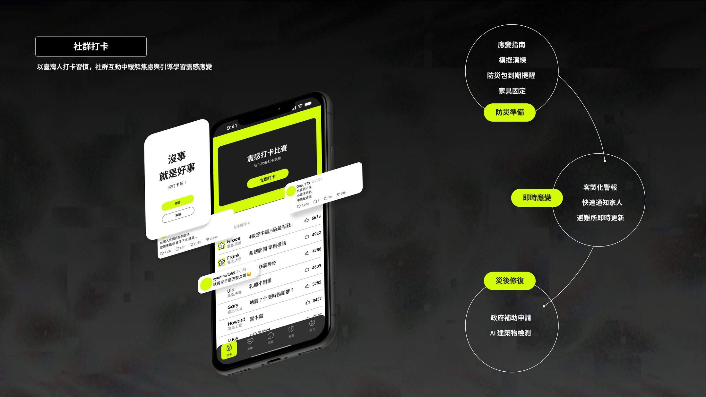

震時秒判
涵蓋地震前、中、後的應對 App，依照你的位置與情境，告訴你當下該怎麼做。
背景與目標
台灣每年有超過 3 萬次地震，現行警報卻只提供數值，沒有回答「現在該怎麼做」。這個專案要解決的不是資訊不足，而是資訊無法轉成行動：搖晃當下「該不該跑」的判斷問題。
搖晃當下，人們其實在猶豫
「搖晃有多嚴重、我該跑嗎？這棟樓會不會倒？衝出去反而更危險？」多數人在這三個疑問中選擇打卡、觀望，錯過了逃生時機。

使用者研究分析
從量化問卷（年齡涵蓋 10–65 歲）和質化訪談確認這不是少數人的困境：

這些痛點依災害的時間先後，落在震前、震時、震後三段。因此本專案把警報從「制式警報通知」變成「行動指引」：在地震前、中、後各階段，依使用者的位置與情境，給出當下即時該做的行動。
挑戰與洞察
整個專案最關鍵的轉折，是一個被訪談推翻的假設：我原本以為地震 App 的重點在「災難當下」。
用災害發生的不同地區／情境來選擇受訪者
影響災難需求的關鍵是兩件事：面對什麼災害、災害來臨時能不能移動。因此我以「災害類型 × 移動策略」挑選差異最大的三位受訪者深入分析，另外兩位用於檢驗發現是否成立。取樣目標為差異覆蓋，而非樣本規模。
當受訪者的說法彼此衝突時，以 Carter 的資料為準：他是五人中唯一真正經歷過大地震的人，實際行為的證據比想像中的回答更可信。
五位受訪者的共同痛點
孕婦、山區學生、健身教練、研究生、裝修師傅，五個人的背景沒有交集，卻在八件事上講出同樣的痛點。
這八項共識構成產品的必要功能。以下三張 persona 呈現的則是設計需要取捨的部分
- 自身行動受限，孩子又難以受控，能分給螢幕的注意力趨近於零
- 擔心孕婦物資，以及避難路徑是否平穩
- 山區訊號原本就不穩定，斷網後 App 無法提供協助
- 聯外道路常僅有一條，封路即無法離開；避難所數量少，選錯就沒有第二次機會
- 危機當下不會查看手機
- 最擔心天花板掉落物，這是只有親歷者才會給出的答案
三個人在同一個環節失效，原因卻完全不同
三人的旅程低谷都落在「收到警報的那一刻」：
- Gill：被過量資訊癱瘓
- Nora：讀不懂純文字的警報類型
- Carter：根本不會拿出手機
一個設計無法同時解決三種失效，推導出後續的分層警報架構，先讓人聽見⭢ 再讓人認出 ⭢ 最後只給一個指引。

延伸驗證：兩位新受訪者，改寫了我的三個結論
深入分析三位受訪者後，我加訪了 Henry（研究生）與 Arnold（裝修師傅）做交叉驗證。核心發現從三人一致變成五人一致，但更重要的是，他們各自暴露了我原本沒看見的盲點。。
收到警報也沒用，他從來沒練習過
「警報之後該採取什麼行動，沒有明確的規範，也沒有事前教育。」
不是看不到、讀不懂，也不是不看手機，而是沒有被教過。這呼應 Carter 的「平時不常打開防災 App，使用上就會很不熟悉」：災中的失敗，根源在災前的空白。
斷網時，大家靠的是鄰居，不是 App
「由當地的里民代表系統性統計居民狀態與失蹤與否，供外地親友查詢。」
其他人回答的是功能（打電話、對講機、簡訊），他回答的是制度。加上 Gill 的「鄰居救濟」與 Carter 的記者同學 LINE 群，五人中有三人在系統失效時回到人際網絡，而現有災防 App 完全沒有承接這條路徑。
推翻我的結論：焦慮來自不確定性
「如果恢復時間無法確定，災戶會很擔心。」
停水何時恢復？避難所何時再開放？我原本判斷「心理支持不需要做」，他的回答修正了這個結論：真正該做的是「恢復時間預估」，用確定性化解焦慮，而不是用安慰。
被推翻的假設：災難當下，沒人會打開 App
把資源投入震時的警報與指引
產品仍涵蓋前中後，五人都未安裝災防 App，而唯一的親歷者說，危機當下他不會拿出手機
災前需要防災包到期提醒與避難演練；災後需要物資站位置與補助申請資訊，而目前沒有任何災防 App 覆蓋災後這一段，這是最明顯的產品空白。因此我把災中壓縮到接近消失，把資源投入災前的準備訓練與災後的行政協助。
「有危機的當下，我不會直覺地使用手機。」（Carter，五人中唯一真正經歷過大地震的受訪者）
洞察收斂：一個失效，五種機制
| 誰 | 失效方式 | 對應的設計 |
|---|---|---|
| Gill | 資訊過多，決策癱瘓 | 減量 → 只給一個指令 |
| Nora | 全是文字，讀不懂 | 圖示辨識 |
| Carter | 根本不看手機 | 聲音穿透 |
| Henry | 不知道該做什麼，沒有事前教育 | 災前演練，介面解決不了 |
| Arnold | 「事情發生太突然」，沒有反應時間 | 災前預先決策 |
前三種可以疊成逐層穿透的警報架構：先聽見（Carter）→ 再認出（Nora）→ 才行動（Gill）。但後兩種無法靠介面解決：Henry 與 Arnold 的失效發生在災難之前，源於沒有被教過、也沒有練習過。這把產品重心進一步推向「災前」，也解釋了為什麼災中被壓縮到接近消失。
設計決策
重心確定放在災前與災後之後，災難當下的設計只剩一個核心取捨：
完整提供建築類型、震度數值與災情細節
警報頁只保留一個判斷：先跑還是先躲
高壓情境下每多一個字都是負擔。細節退到次層而非刪除：放棄資訊完整，換來一眼可讀。
三階段：涵蓋前中後，災中刻意極簡
產品架構沿災害時間軸展開，但三段刻意不平均用力：五位受訪者沒有一位會在災難當下打開 App，因此資源集中在災前與災後。

四個決策，四個取捨
離線是預設，不是備案
依據 · 5/5 共識＋山區受訪者的日常：她不是在假設斷網，是在描述訊號不穩的每一天圖示優先於文字
依據 · 5/5 共識：五位受訪者各自獨立提出，是設計原則、不是個人偏好心理支持：先刪除，再修正
依據 · 主力三人在「物資 vs 心理支援」中全數選擇物資；延伸驗證的 Arnold 修正了結論：焦慮來自不確定性一鍵填空式通報
依據 · 受訪者的原話：「我在 ＿＿，發生 ＿＿，平安，在 ＿＿ 集合」。他要的不是聊天，而是句型使用者流程
三條流程對應震前、震時、震後，標出每個畫面之間的觸發條件與系統判斷邏輯：什麼時候由系統自動接手、什麼時候需要使用者做選擇。


成效與驗證
這套「災前災後為主、災中極簡」的架構，經兩輪易用性測試驗證與修正（詳見 04 介面設計），最終獲得金點概念設計獎與金點新秀設計獎的肯定。
介面設計
警報介面用螢光綠搭配深色底，在慌亂中也能一眼看清；警報內容會依震度和所在情境調整。
Style Guide
統一色彩、字級與元件狀態，讓資訊密度高的畫面也能保持一致。

震時應變
地震當下，依照所在位置與情境發出警報，指引避難路線，並確認家人是否平安。


警報聲
警報聲也是自己設計的，分成低、中、高三個震度級別。急促程度不同，不用看螢幕，用聽的就能判斷嚴重性。
輕微提示
和緩的提示音，提醒留意就好。
中等警示
節奏加快，提醒做好應變準備。
緊急警報
急促連續的警示，必須立即行動。
震前準備
防災包、家具固定、避難演練，平常就能一項一項準備好。


震後修復
AI 建築檢測、補助申請、社群互助，把災後需要的資訊集中在同一個地方。


互動原型
主要功能實際操作起來的樣子。
易用性測試
找了 5 位使用者，分別在日間與晚間測試核心流程。地震發生的時間會影響能見度和操作方式，所以分開驗證。
測試中使用者的猶豫，仍集中在那三個問題：搖晃有多嚴重、這棟樓會不會倒、衝出去反而更危險。根據測試結果，我做了以下調整：
避難流程補完整
原本的流程斷在「決定要跑之後」，選了避難所卻沒有接續。我把它補成一條完整路徑：判斷是否避難 → 選定避難所自動更新路線 → 選交通方式 → 導航 → 到達通知 → 通知家人集合。交通方式也做了取捨：步行優先；開車則提示開警示燈、緩慢靠右停車熄火、再就近避難，因為災時開車本身就是風險。
警報分級 ＋ 語音播報
測試也印證了同一件事：逃難時沒有人會一直盯著手機。核心指令改用語音播報，警報聲分低、中、高三級，用聽的就能判斷嚴重度（對應分層警報的第一層：聲音穿透）。
高壓下的易讀與易點
這就是「資訊完整 vs 秒讀秒懂」的落地：放大觸控範圍，重排地震知識的資訊層級，建築類型縮小、「立即避難」放到最醒目的位置。
家人安全即時同步
沿用受測者提出的填空句型，回報是否安全、所在位置、是否集合，減少震後彼此找不到的焦慮。
風險評估與專業協助
加入風險評估通知、建築檢測專業人員協助與救助人員資訊，以及防止家具翻倒的提醒。